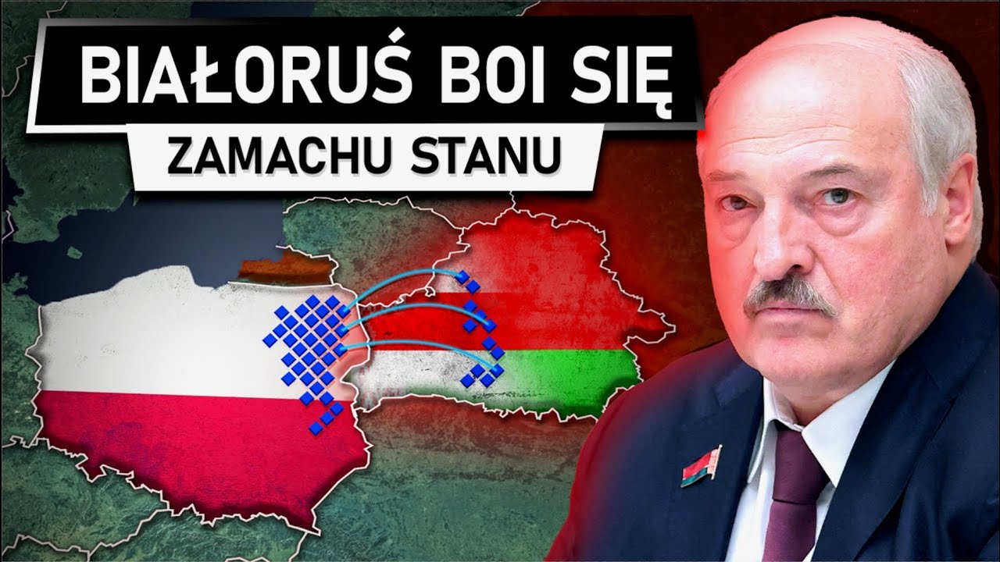

Tkaczyk News
SERWIS INFORMACYJNY
Polska wykona zamach stanu w Białorusi?
W planach organizacji BYPOL jest między innymi tworzenie barykad w strategicznych miejscach kraju, w razie rozpoczęcia zamachu stanu. Lider BYPOL-u twierdzi, że do takiej działalności zapisało się już ok. 200 tys. Białorusinów, z czego ok. 5 tys. osób wyraziło chęć wzięcia udziału w „operacjach specjalnych”, takich jak sabotaż. Jednocześnie organizacja ma nadzieję, że uda jej się przejąć władzę w kraju bez walki. Jednak ten scenariusz nie będzie możliwy do realizacji jeśli Rosja nie będzie wystarczająco osłabiona, w tym momencie to niemożliwe, ponieważ armia kremla częściowo się odbudowała i zaczyna nawet powoli bo powoli ale przesuwać ponownie na niekorzyść Ukrainy linię frontu. Rosjanie kontrolują już cały teren Adwijiwki. Wcześniej z miejscowości wycofało się ukraińskie wojsko. Prezydent Ukrainy Wołodymyr Zełenski tłumaczył, że chodziło o ratowanie życia żołnierzy. Wojska Putina przesunęły granicę frontu w Donbasie o kilka kilometrów, to nie są jakieś spektakularne zwycięstwa, ale to nie jest też moment na to aby doprowadzić na Białorusi do zamachu stanu. De facto to mogłoby Putina pogrążyć, ale koszty ludzkie mogłyby być naprawdę ogromne. Realnie Łukaszenkę popiera około 15 do 20% Białorusinów większość z nich stanowią Rosjanie. Przy 10 milionach mieszkańców łatwo można policzyć jak wiele ludzi mogłoby być narażonych w przypadku potencjalnej wojny domowej. Rosja z pewnością w takim wypadku podjęłaby interwencje, a to mogłoby się zakończyć tragicznie. Być może całkowicie likwidując białoruską państwowość. Swoją drogą Białoruski dyktator 3 marca podpisał dekret "O przejściu organów państwowych i innych instytucji w tryb pracy w warunkach czasu wojny" - poinformowała jego służba prasowa. Dokument ma regulować tryb przejścia organów i instytucji państwowych z pracy w czasie pokoju do pracy w warunkach wojennych w przypadku powstania zagrożenia dla bezpieczeństwa narodowego. W dekrecie Alaksandra Łukaszenki określono, których organów on dotyczy. Nowe prawo objęło m.in. Ogólnobiałoruskie Zgromadzenie Ludowe zjazd deputowanych z całego kraju, obie izby parlamentu, Sąd Najwyższy i Sąd Konstytucyjny. Treść dekretu jest tajna, ale moment jego publikacji schodzący się w czasie z groźbami po stronie białoruskiej opozycji daje do zrozumienia, że reżim jest pełen obaw. Dyktatury charakteryzują się tym, że mimo swojej siły, żyją w ciągłym strachu- a Łukaszenka jest tego flagowym przykładem. Obecnie więźniów politycznych za naszą wschodnią granicą ma być ponad 1500, a ich liczba systematycznie rośnie. Jednym z nich jest Andrzej Poczobut, białoruski dziennikarz polskiego pochodzenia, który regularnie pisał o stanie swojego państwa. Władza stara się skrupulatnie filtrować wszystkie treści aby nie dopuścić do nagłego masowego buntu.
4.03.2024, 17:37